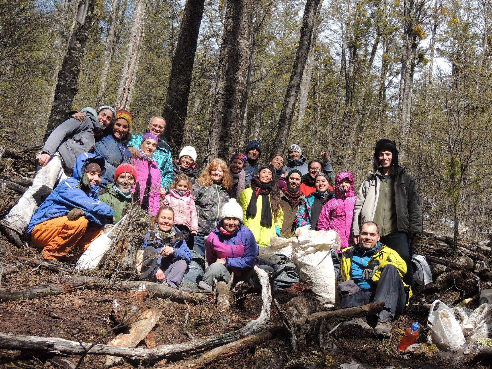

No era un bosque encantado pero nosotros estábamos encantados con él
A medida que pasan los años, nos damos cuenta que la rueda gira cada vez a un ritmo más frenético que antes. Modificamos hábitos, prioridades, recurrimos al piloto automático cuando ciertas cosas nos sobrepasan, perdiéndonos muchas otras. Esto tiene consecuencias palpables tanto en nosotros como en la naturaleza, ya que formamos parte de un todo. Por eso, desarrollamos un proyecto que enriquece de conocimientos, que moviliza nuevos espacios de reflexión colectiva, que te invita a ser parte de una experiencia única que te va a acompañar siempre. Sin ir mas lejos, creemos en el concepto "Crisol" como un medio donde los voluntarios, sean de donde sean, puedan fundirse en un objetivo totalmente accesible e inclusivo. Además estamos convencidos del compromiso ético y moral que tenemos tanto como agentes de cambio, como para el bosque nativo.
